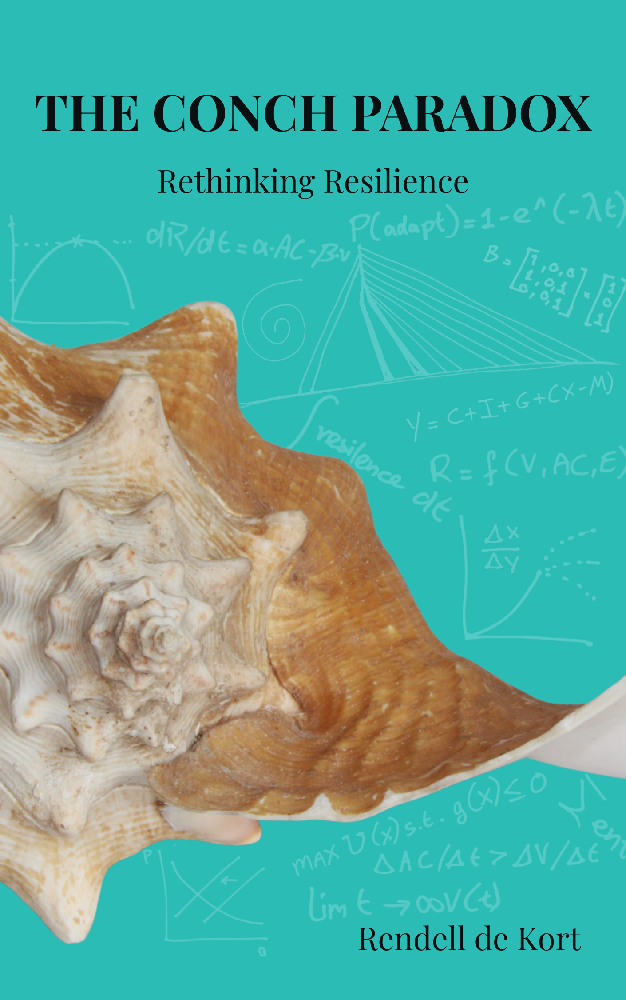

Rethinking Resilience

Available now
Book signings
As featured in
World Economic Forum "What small islands reveal about a blind spot in resilience thinking""Our greatest strengths often contain the seeds of our greatest vulnerabilities. The shell that protects also constrains."
This book is about a dangerous misconception that shapes how we respond to every threat we face, from medical emergencies to economic crises to climate change. We believe that building stronger defenses makes us safer. We assume that specialized protection reduces vulnerability.
We're wrong.
When our unborn son was diagnosed with a life-threatening diaphragmatic hernia, my family was thrust from the tropical certainty of Aruba into the medical complexity of Rotterdam. The decision to save his life required surrendering control of it entirely. This journey through impossible choices revealed profound truths about resilience, vulnerability, and the paradoxical nature of strength.
As a development economist and World Bank consultant studying Small Island Developing States, I've spent years analyzing how islands like Aruba navigate their unique vulnerabilities. My research revealed a troubling pattern: the very adaptations that create resilience against familiar threats often leave systems most vulnerable to novel ones.
The queen conch, native to Caribbean waters, embodies this paradox perfectly. Its magnificent shell, evolved over millions of years for protection against predators, has become the constraint threatening the species' survival as oceans warm and ecosystems shift. Perfect adaptation to current conditions creates dangerous brittleness when environments change.
This pattern appears everywhere: island economies specialized for tourism, medical systems optimized for efficiency, marriages built on comfortable routines, companies invested in core competencies. The shell that protects also constrains. Strength and weakness are two faces of the same choice.
The Conch Paradox weaves together personal narrative, economic research, and natural history to explore how we might navigate an increasingly uncertain world, not by building stronger shells, but by developing the wisdom to know when protection becomes constraint, and when transformation becomes necessary.
"Aruba may have gained not only a respected economist and policy thinker, but also a remarkably mature literary voice capable of contributing meaningfully to conversations far beyond our shores. Rendell has mastered something exceptionally difficult: the ability to weave deeply personal and emotional human experiences into what many would consider the cold, technical world of economics. Humanizes these ideas without diluting their intellectual depth. That is rare. Very rare."
Lincoln D. Gomez"Complex concepts became accessible because they were attached to lived experience. The book is imperfect, vulnerable, and deeply human, much like life itself."
Jessica Besselink, MBA"De Kort traces a single paradox from seashell to family crisis to national policy, showing how the very institutions we design for safety become obstacles when conditions shift. Analytically sharp and profoundly honest."
Prof. Kees Boersma"What a journey to take on the pages of your book. After 18 years as governor, De Kort's framework is helping me navigate my own future journey and understand how protection becomes a constraint."
Jonathan G.A. Johnson"A powerful and deeply human reflection on resilience — showing how strength, vulnerability, and surrender intertwine in times of profound uncertainty. This book speaks not only to islands, but to all of us navigating an unpredictable world."
Mauritsz de Kort"By interweaving academic insights with deeply personal experiences, De Kort offers a unique new perspective on the vulnerability and resilience of small island territories."
Prof. Wouter Veenendaal"Reading this, I saw my own journey articulated clearly — how what I built to protect myself years ago had become what was holding me back. The conch paradox reveals a pattern that goes far beyond islands."
Lucija Rakocevic"The queen conch is an iconic symbol of the Caribbean region, important for its cultural and economic significance. While the species has thrived in our warm, shallow waters for millions of years, its biology makes it vulnerable to human impacts including overfishing, habitat loss, and climate change. De Kort uses the natural history of this animal, along with his deeply personal story, to help us understand how protective shells can harm small island nations, our institutions, and our personal relationships. Life lessons offered by the biology of a snail."
Dr. Allan Stoner"The Conch Paradox captures a defining challenge in social entrepreneurship and international development today: many of the funding and operating models that helped organizations survive in an earlier era are no longer credible in a post-USAID, fracturing world order. Rendell de Kort offers a sharp and timely framework for understanding why resilience requires more than doubling down on old forms of protection — it requires the wisdom to recognize when familiar strengths have become constraints, and the clarity to let go of inherited assumptions before they harden into liabilities."
Reed Shafer-Ray